Why OOP?
Suppose that you want to assemble your own PC, you go to a hardware store and pick up a motherboard, a processor, some RAMs, a hard disk, a casing, a power supply, and put them together. You turn on the power, and the PC runs. You need not worry whether the motherboard is a 4-layer or 6-layer board, whether the hard disk has 4 or 6 plates; 3 inches or 5 inches in diameter, whether the RAM is made in Japan or Korea, and so on. You simply put the hardware components together and expect the machine to run. Of course, you have to make sure that you have the correct interfaces, i.e., you pick an IDE hard disk rather than a SCSI hard disk, if your motherboard supports only IDE; you have to select RAMs with the correct speed rating, and so on. Nevertheless, it is not difficult to set up a machine from hardware components.
Similarly, a car is assembled from parts and components, such as chassis, doors, engine, wheels, brake, and transmission. The components are reusable, e.g., a wheel can be used in many cars (of the same specifications).
Hardware, such as computers and cars, are assembled from parts, which are reusable components.
How about software? Can you "assemble" a software application by picking a routine here, a routine there, and expect the program to run? The answer is obviously no! Unlike hardware, it is very difficult to "assemble" an application from software components. Since the advent of computer 60 years ago, we have written tons and tons of programs. However, for each new application, we have to re-invent the wheels and write the program from scratch.
Why re-invent the wheels?
Traditional Procedural-Oriented languages
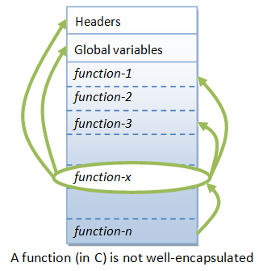Can we do this in traditional procedural-oriented programming language such as C, Fortran, Cobol, or Pascal?
Traditional procedural-oriented languages (such as C and Pascal) suffer some notable drawbacks in creating reusable software components:
- The programs are made up of functions. Functions are often not reusable. It is very difficult to copy a function from one program and reuse in another program because the the function is likely to reference the headers, global variables and other functions. In other words, functions are not well-encapsulated as a self-contained reusable unit.
- The procedural languages are not suitable of high-level abstraction for solving real life problems. For example, C programs uses constructs such as if-else, for-loop, array, function, pointer, which are low-level and hard to abstract real problems such as a Customer Relationship Management (CRM) system or a computer soccer game. (Imagine using assembly codes, which is a very low level code, to write a computer soccer game. C is better but no much better.)
In brief, the traditional procedural-languages separate the data structures and algorithms of the software entities.
In the early 1970s, the US Department of Defense (DoD) commissioned a task force to investigate why its IT budget always went out of control; but without much to show for. The findings are:
- 80% of the budget went to the software (while the remaining 20% to the hardware).
- More than 80% of the software budget went to maintenance (only the remaining 20% for new software development).
- Hardware components could be applied to various products, and their integrity normally did not affect other products. (Hardware can share and reuse! Hardware faults are isolated!)
- Software procedures were often non-sharable and not reusable. Software faults could affect other programs running in computers.
The task force proposed to make software behave like hardware OBJECT. Subsequently, DoD replaces over 450 computer languages, which were then used to build DoD systems, with an object-oriented language called Ada.
Object-Oriented Programming Languages
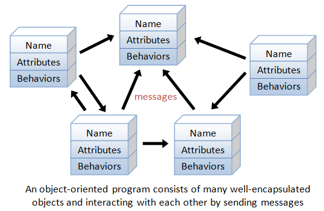Object-oriented programming (OOP) languages are designed to overcome these problems.
- The basic unit of OOP is a class, which encapsulates both the static attributes and dynamic behaviors within a "box", and specifies the public interface for using these boxes. Since the class is well-encapsulated (compared with the function), it is easier to reuse these classes. In other words, OOP combines the data structures and algorithms of a software entity inside the same box.
- OOP languages permit higher level of abstraction for solving real-life problems. The traditional procedural language (such as C and Pascal) forces you to think in terms of the structure of the computer (e.g. memory bits and bytes, array, decision, loop) rather than thinking in terms of the problem you are trying to solve. The OOP languages (such as Java, C++, C#) let you think in the problem space, and use software objects to represent and abstract entities of the problem space to solve the problem.
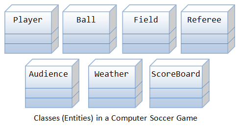
As an example, suppose you wish to write a computer soccer games (which I consider as a complex application). It is quite difficult to model the game in procedural-oriented languages. But using OOP languages, you can easily model the program accordingly to the "real things" appear in the soccer games.
- Player: attributes include name, number, location in the field, and etc; operations include run, jump, kick-the-ball, and etc.
- Ball:
- Reference:
- Field:
- Audience:
- Weather:
Most importantly, some of these classes (such as Ball and Audience) can be reused in another application, e.g., computer basketball game, with little or no modification.
Benefits of OOP
The procedural-oriented languages focus on procedures, with function as the basic unit. You need to first figure out all the functions and then think about how to represent data.
The object-oriented languages focus on components that the user perceives, with objects as the basic unit. You figure out all the objects by putting all the data and operations that describe the user's interaction with the data.
Object-Oriented technology has many benefits:
- Ease in software design as you could think in the problem space rather than the machine's bits and bytes. You are dealing with high-level concepts and abstractions. Ease in design leads to more productive software development.
- Ease in software maintenance: object-oriented software are easier to understand, therefore easier to test, debug, and maintain.
- Reusable software: you don't need to keep re-inventing the wheels and re-write the same functions for different situations. The fastest and safest way of developing a new application is to reuse existing codes - fully tested and proven codes.
OOP Basics
Classes & Instances
Class: A class is a definition of objects of the same kind. In other words, a class is a blueprint, template, or prototype that defines and describes the static attributes and dynamic behaviors common to all objects of the same kind.
Instance: An instance is a realization of a particular item of a class. In other words, an instance is an instantiation of a class. All the instances of a class have similar properties, as described in the class definition. For example, you can define a class called "Student" and create three instances of the class "Student" for "Peter", "Paul" and "Pauline".
The term "object" usually refers to instance. But it is often used quite loosely, which may refer to a class or an instance.
A Class is a 3-Compartment Box encapsulating Data and Functions
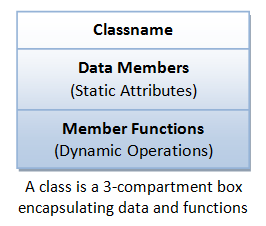A class can be visualized as a three-compartment box, as illustrated:
- Classname (or identifier): identifies the class.
- Data Members or Variables (or attributes, states, fields): contains the static attributes of the class.
- Member Functions (or methods, behaviors, operations): contains the dynamic operations of the class.
In other words, a class encapsulates the static attributes (data) and dynamic behaviors (operations that operate on the data) in a box.
Class Members: The data members and member functions are collectively called class members.
The followings figure shows a few examples of classes:

The following figure shows two instances of the class Student, identified as "paul" and "peter".
Unified Modeling Language (UML) Class and Instance Diagrams: The above class diagrams are drawn according to the UML notations. A class is represented as a 3-compartment box, containing name, data members (variables), and member functions, respectively. classname is shown in bold and centralized. An instance (object) is also represented as a 3-compartment box, with instance name shown as instanceName:Classname and underlined.
Brief Summary
- A class is a programmer-defined, abstract, self-contained, reusable software entity that mimics a real-world thing.
- A class is a 3-compartment box containing the name, data members (variables) and the member functions.
- A class encapsulates the data structures (in data members) and algorithms (member functions). The values of the data members constitute its state. The member functions constitute its behaviors.
- An instance is an instantiation (or realization) of a particular item of a class.
Class Definition
In C++, we use the keyword class to define a class. There are two sections in the class declaration: private and public, which will be explained later. For examples,
class Circle { // classname
private:
double radius; // Data members (variables)
string color;
public:
double getRadius(); // Member functions
double getArea();
}
class SoccerPlayer { // classname
private:
int number; // Data members (variables)
string name;
int x, y;
public:
void run(); // Member functions
void kickBall();
}
Class Naming Convention: A classname shall be a noun or a noun phrase made up of several words. All the words shall be initial-capitalized (camel-case). Use a singular noun for classname. Choose a meaningful and self-descriptive classname. For examples, SoccerPlayer, HttpProxyServer, FileInputStream, PrintStream and SocketFactory.
Creating Instances of a Class
To create an instance of a class, you have to:
- Declare an instance identifier (name) of a particular class.
- Invoke a constructor to construct the instance (i.e., allocate storage for the instance and initialize the variables).
For examples, suppose that we have a class called Circle, we can create instances of Circle as follows:
// Construct 3 instances of the class Circle: c1, c2, and c3 Circle c1(1.2, "red"); // radius, color Circle c2(3.4); // radius, default color Circle c3; // default radius and color
Alternatively, you can invoke the constructor explicitly using the following syntax:
Circle c1 = Circle(1.2, "red"); // radius, color Circle c2 = Circle(3.4); // radius, default color Circle c3 = Circle(); // default radius and color
Dot (.) Operator
To reference a member of a object (data member or member function), you must:
- First identify the instance you are interested in, and then
- Use the dot operator (
.) to reference the member, in the form ofinstanceName.memberName.
For example, suppose that we have a class called Circle, with two data members (radius and color) and two functions (getRadius() and getArea()). We have created three instances of the class Circle, namely, c1, c2 and c3. To invoke the function getArea(), you must first identity the instance of interest, says c2, then use the dot operator, in the form of c2.getArea(), to invoke the getArea() function of instance c2.
For example,
// Declare and construct instances c1 and c2 of the class Circle Circle c1(1.2, "blue"); Circle c2(3.4, "green"); // Invoke member function via dot operator cout << c1.getArea() << endl; cout << c2.getArea() << endl; // Reference data members via dot operator c1.radius = 5.5; c2.radius = 6.6;
Calling getArea() without identifying the instance is meaningless, as the radius is unknown (there could be many instances of Circle - each maintaining its own radius).
In general, suppose there is a class called AClass with a data member called aData and a member function called aFunction(). An instance called anInstance is constructed for AClass. You use anInstance.aData and anInstance.aFunction().
Data Members (Variables)
A data member (variable) has a name (or identifier) and a type; and holds a value of that particular type (as descried in the earlier chapter). A data member can also be an instance of a certain class (to be discussed later).
Data Member Naming Convention: A data member name shall be a noun or a noun phrase made up of several words. The first word is in lowercase and the rest of the words are initial-capitalized (camel-case), e.g., fontSize, roomNumber, xMax, yMin and xTopLeft. Take note that variable name begins with an lowercase, while classname begins with an uppercase.
Member Functions
A member function (as described in the earlier chapter):
- receives parameters from the caller,
- performs the operations defined in the function body, and
- returns a piece of result (or void) to the caller.
Member Function Naming Convention: A function name shall be a verb, or a verb phrase made up of several words. The first word is in lowercase and the rest of the words are initial-capitalized (camel-case). For example, getRadius(), getParameterValues().
Take note that data member name is a noun (denoting a static attribute), while function name is a verb (denoting an action). They have the same naming convention. Nevertheless, you can easily distinguish them from the context. Functions take arguments in parentheses (possibly zero argument with empty parentheses), but variables do not. In this writing, functions are denoted with a pair of parentheses, e.g., println(), getArea() for clarity.
Putting them Together: An OOP Example
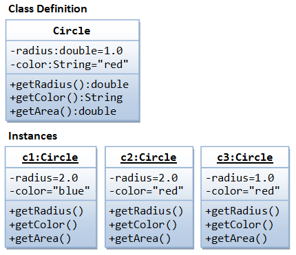A class called Circle is to be defined as illustrated in the class diagram. It contains two data members: radius (of type double) and color (of type String); and three member functions: getRadius(), getColor(), and getArea().
Three instances of Circles called c1, c2, and c3 shall then be constructed with their respective data members, as shown in the instance diagrams.
In this example, we shall keep all the codes in a single source file called CircleAIO.cpp.
CircleAIO.cpp
1 2 3 4 5 6 7 8 9 10 11 12 13 14 15 16 17 18 19 20 21 22 23 24 25 26 27 28 29 30 31 32 33 34 35 36 37 38 39 40 41 42 43 44 45 46 47 48 |
/* The Circle class (All source codes in one file) (CircleAIO.cpp) */ #include <iostream> // using IO functions #include <string> // using string using namespace std; class Circle { private: double radius; // Data member (Variable) string color; // Data member (Variable) public: // Constructor with default values for data members Circle(double r = 1.0, string c = "red") { radius = r; color = c; } double getRadius() { // Member function (Getter) return radius; } string getColor() { // Member function (Getter) return color; } double getArea() { // Member function return radius*radius*3.1416; } }; // need to end the class declaration with a semi-colon // Test driver function int main() { // Construct a Circle instance Circle c1(1.2, "blue"); cout << "Radius=" << c1.getRadius() << " Area=" << c1.getArea() << " Color=" << c1.getColor() << endl; // Construct another Circle instance Circle c2(3.4); // default color cout << "Radius=" << c2.getRadius() << " Area=" << c2.getArea() << " Color=" << c2.getColor() << endl; // Construct a Circle instance using default no-arg constructor Circle c3; // default radius and color cout << "Radius=" << c3.getRadius() << " Area=" << c3.getArea() << " Color=" << c3.getColor() << endl; return 0; } |
To compile and run the program (with GNU GCC under Windows):
> g++ -o CircleAIO.exe CircleAIO.cpp
// -o specifies the output file name
> CircleAIO
Radius=1.2 Area=4.5239 Color=blue
Radius=3.4 Area=36.3169 Color=red
Radius=1 Area=3.1416 Color=red
Constructors
A constructor is a special function that has the function name same as the classname. In the above Circle class, we define a constructor as follows:
// Constructor has the same name as the class
Circle(double r = 1.0, string c = "red") {
radius = r;
color = c;
}
A constructor is used to construct and initialize all the data members. To create a new instance of a class, you need to declare the name of the instance and invoke the constructor. For example,
Circle c1(1.2, "blue"); Circle c2(3.4); // default color Circle c3; // default radius and color // Take note that there is no empty bracket ()
A constructor function is different from an ordinary function in the following aspects:
- The name of the constructor is the same as the classname.
- Constructor has no return type (or implicitly returns
void). Hence, noreturnstatement is allowed inside the constructor's body. - Constructor can only be invoked once to initialize the instance constructed. You cannot call the constructor afterwards in your program.
- Constructors are not inherited (to be explained later).
Default Arguments for Functions
In C++, you can specify the default value for the trailing arguments of a function (including constructor) in the function header. For example,
1 2 3 4 5 6 7 8 9 10 11 12 13 14 15 16 17 18 19 20 21 |
/* Test function default arguments (TestFnDefault.cpp) */ #include <iostream> using namespace std; // Function prototype int sum(int n1, int n2, int n3 = 0, int n4 = 0, int n5 = 0); int main() { cout << sum(1, 1, 1, 1, 1) << endl; // 5 cout << sum(1, 1, 1, 1) << endl; // 4 cout << sum(1, 1, 1) << endl; // 3 cout << sum(1, 1) << endl; // 2 // cout << sum(1) << endl; // error: too few arguments } // Function definition // The default values shall be specified in function prototype, // not the function implementation int sum(int n1, int n2, int n3, int n4, int n5) { return n1 + n2 + n3 + n4 + n5; } |
"public" vs. "private" Access Control Modifiers
An access control modifier can be used to control the visibility of a data member or a member function within a class. We begin with the following two access control modifiers:
public: The member (data or function) is accessible and available to all in the system.private: The member (data or function) is accessible and available within this class only.
For example, in the above Circle definition, the data member radius is declared private. As the result, radius is accessible inside the Circle class, but NOT outside the class. In other words, you cannot use "c1.radius" to refer to c1's radius in main(). Try inserting the statement "cout << c1.radius;" in main() and observe the error message:
CircleAIO.cpp:8:11: error: 'double Circle::radius' is private
Try moving radius to the public section, and re-run the statement.
On the other hand, the function getRadius() is declared public in the Circle class. Hence, it can be invoked in the main().
UML Notation: In UML notation, public members are denoted with a "+", while private members with a "-" in the class diagram.
Information Hiding and Encapsulation
A class encapsulates the static attributes and the dynamic behaviors into a "3-compartment box". Once a class is defined, you can seal up the "box" and put the "box" on the shelve for others to use and reuse. Anyone can pick up the "box" and use it in their application. This cannot be done in the traditional procedural-oriented language like C, as the static attributes (or variables) are scattered over the entire program and header files. You cannot "cut" out a portion of C program, plug into another program and expect the program to run without extensive changes.
Data member of a class are typically hidden from the outside word, with private access control modifier. Access to the private data members are provided via public assessor functions, e.g., getRadius() and getColor().
This follows the principle of information hiding. That is, objects communicate with each others using well-defined interfaces (public functions). Objects are not allowed to know the implementation details of others. The implementation details are hidden or encapsulated within the class. Information hiding facilitates reuse of the class.
Rule of Thumb: Do not make any data member public, unless you have a good reason.
Getters and Setters
To allow other to read the value of a private data member says xxx, you shall provide a get function (or getter or accessor function) called getXxx(). A getter need not expose the data in raw format. It can process the data and limit the view of the data others will see. Getters shall not modify the data member.
To allow other classes to modify the value of a private data member says xxx, you shall provide a set function (or setter or mutator function) called setXxx(). A setter could provide data validation (such as range checking), and transform the raw data into the internal representation.
For example, in our Circle class, the data members radius and color are declared private. That is to say, they are only available within the Circle class and not visible outside the Circle class - including main(). You cannot access the private data members radius and color from the main() directly - via says c1.radius or c1.color. The Circle class provides two public accessor functions, namely, getRadius() and getColor(). These functions are declared public. The main() can invoke these public accessor functions to retrieve the radius and color of a Circle object, via says c1.getRadius() and c1.getColor().
There is no way you can change the radius or color of a Circle object, after it is constructed in main(). You cannot issue statements such as c1.radius = 5.0 to change the radius of instance c1, as radius is declared as private in the Circle class and is not visible to other including main().
If the designer of the Circle class permits the change the radius and color after a Circle object is constructed, he has to provide the appropriate setter, e.g.,
// Setter for color void setColor(string c) { color = c; } // Setter for radius void setRadius(double r) { radius = r; }
With proper implementation of information hiding, the designer of a class has full control of what the user of the class can and cannot do.
Keyword "this"
You can use keyword "this" to refer to this instance inside a class definition.
One of the main usage of keyword this is to resolve ambiguity between the names of data member and function parameter. For example,
class Circle {
private:
double radius; // Member variable called "radius"
......
public:
void setRadius(double radius) { // Function's argument also called "radius"
this->radius = radius;
// "this.radius" refers to this instance's member variable
// "radius" resolved to the function's argument.
}
......
}
In the above codes, there are two identifiers called radius - a data member and the function parameter. This causes naming conflict. To resolve the naming conflict, you could name the function parameter r instead of radius. However, radius is more approximate and meaningful in this context. You can use keyword this to resolve this naming conflict. "this->radius" refers to the data member; while "radius" resolves to the function parameter.
"this" is actually a pointer to this object. I will explain pointer and the meaning of "->" operator later.
Alternatively, you could use a prefix (such as m_) or suffix (such as _) to name the data members to avoid name crashes. For example,
class Circle {
private:
double m_radius; // or radius_
......
public:
void setRadius(double radius) {
m_radius = radius; // or radius_ = radius
}
......
}
C++ Compiler internally names their data members beginning with a leading underscore (e.g., _xxx) and local variables with 2 leading underscores (e.g., __xxx). Hence, avoid name beginning with underscore in your program.
"const" Member Functions
A const member function, identified by a const keyword at the end of the member function's header, cannot modifies any data member of this object. For example,
double getRadius() const { // const member function radius = 0; // error: assignment of data-member 'Circle::radius' in read-only structure return radius; }
Convention for Getters/Setters and Constructors
The constructor, getter and setter functions for a private data member called xxx of type T in a class Aaa have the following conventions:
class Aaa {
private:
// A private variable named xxx of type T
T xxx;
public:
// Constructor
Aaa(T x) { xxx = x; }
// OR
Aaa(T xxx) { this->xxx = xxx; }
// OR using member initializer list (to be explained later)
Aaa(T xxx) : xxx(xxx) { }
// A getter for variable xxx of type T receives no argument and return a value of type T
T getXxx() const { return xxx; }
// A setter for variable xxx of type T receives a parameter of type T and return void
void setXxx(T x) { xxx = x; }
// OR
void setXxx(T xxx) { this->xxx = xxx; }
}
For a bool variable xxx, the getter shall be named isXxx(), instead of getXxx(), as follows:
private: // Private boolean variable bool xxx; public: // Getter bool isXxx() const { return xxx; } // Setter void setXxx(bool x) { xxx = x; } // OR void setXxx(bool xxx) { this->xxx = xxx; }
Default Constructor
A default constructor is a constructor with no parameters, or having default values for all the parameters. For example, the above Circle's constructor can be served as default constructor with all the parameters default.
Circle c1; // Declare c1 as an instance of Circle, and invoke the default constructor Circle c1(); // Error! // (This declares c1 as a function that takes no parameter and returns a Circle instance)
If C++, if you did not provide ANY constructor, the compiler automatically provides a default constructor that does nothing. That is,
ClassName::ClassName() { } // Take no argument and do nothing
Compiler will not provide a default constructor if you define any constructor(s). If all the constructors you defined require arguments, invoking no-argument default constructor results in error. This is to allow class designer to make it impossible to create an uninitialized instance, by NOT providing an explicit default constructor.
Constructor's Member Initializer List
Instead of initializing the private data members inside the body of the constructor, as follows:
Circle(double r = 1.0, string c = "red") {
radius = r;
color = c;
}
We can use an alternate syntax called member initializer list as follows:
Circle(double r = 1.0, string c = "red") : radius(r), color(c) { }
Member initializer list is placed after the constructor's header, separated by a colon (:). Each initializer is in the form of data_member_name(parameter_name). For fundamental type, it is equivalent to data_member_name = parameter_name. For object, the constructor will be invoked to construct the object. The constructor's body (empty in this case) will be run after the completion of member initializer list.
It is recommended to use member initializer list to initialize all the data members, as it is often more efficient than doing assignment inside the constructor's body.
*Destructor
A destructor, similar to constructor, is a special function that has the same name as the classname, with a prefix ~, e.g., ~Circle(). Destructor is called implicitly when an object is destroyed.
If you do not define a destructor, the compiler provides a default, which does nothing.
class MyClass {
public:
// The default destructor that does nothing
~MyClass() { }
......
}
Advanced Notes
- If your class contains data member which is dynamically allocated (via
newornew[]operator), you need to free the storage viadeleteordelete[].
*Copy Constructor
A copy constructor constructs a new object by copying an existing object of the same type. In other words, a copy constructor takes an argument, which is an object of the same class.
If you do not define a copy constructor, the compiler provides a default which copies all the data members of the given object. For example,
Circle c4(7.8, "blue");
cout << "Radius=" << c4.getRadius() << " Area=" << c4.getArea()
<< " Color=" << c4.getColor() << endl;
// Radius=7.8 Area=191.135 Color=blue
// Construct a new object by copying an existing object
// via the so-called default copy constructor
Circle c5(c4);
cout << "Radius=" << c5.getRadius() << " Area=" << c5.getArea()
<< " Color=" << c5.getColor() << endl;
// Radius=7.8 Area=191.135 Color=blue
The copy constructor is particularly important. When an object is passed into a function by value, the copy constructor will be used to make a clone copy of the argument.
Advanced Notes
- Pass-by-value for object means calling the copy constructor. To avoid the overhead of creating a clone copy, it is usually better to pass-by-reference-to-
const, which will not have side effect on modifying the caller's object. - The copy constructor has the following signature:
class MyClass { private: T1 member1; T2 member2; public: // The default copy constructor which constructs an object via memberwise copy MyClass(const MyClass & rhs) { member1 = rhs.member1; member2 = rhs.member2; } ...... } - The default copy constructor performs shadow copy. It does not copy the dynamically allocated data members created via
newornew[]operator.
*Copy Assignment Operator (=)
The compiler also provides a default assignment operator (=), which can be used to assign one object to another object of the same class via memberwise copy. For example, using the Circle class defined earlier,
Circle c6(5.6, "orange"), c7; cout << "Radius=" << c6.getRadius() << " Area=" << c6.getArea() << " Color=" << c6.getColor() << endl; // Radius=5.6 Area=98.5206 Color=orange cout << "Radius=" << c7.getRadius() << " Area=" << c7.getArea() << " Color=" << c7.getColor() << endl; // Radius=1 Area=3.1416 Color=red (default constructor) c7 = c6; // memberwise copy assignment cout << "Radius=" << c7.getRadius() << " Area=" << c7.getArea() << " Color=" << c7.getColor() << endl; // Radius=5.6 Area=98.5206 Color=orange
Advanced Notes
- You could overload the assignment opeator to override the default.
- The copy constructor, instead of copy assignment operator, is used in declaration:
Circle c8 = c6; // Invoke the copy constructor, NOT copy assignment operator // Same as Circle c8(c6) - The default copy assignment operator performs shadow copy. It does not copy the dynamically allocated data members created via
newornew[]operator. - The copy assignment operator has the following signature:
class MyClass { private: T1 member1; T2 member2; public: // The default copy assignment operator which assigns an object via memberwise copy MyClass & operator=(const MyClass & rhs) { member1 = rhs.member1; member2 = rhs.member2; return *this; } ...... } - The copy assignment operator differs from the copy constructor in that it must release the dynamically allocated contents of the target and prevent self assignment. The assignment operator shall return a reference of this object to allow chaining operation (such as
x = y = z). - The default constructor, default destructor, default copy constructor, default copy assignment operators are known as special member functions, in which the compiler will automatically generate a copy if they are used in the program and not explicitly defined.
Separating Header and Implementation
For better software engineering, it is recommended that the class declaration and implementation be kept in 2 separate files: declaration is a header file ".h"; while implementation in a ".cpp". This is known as separating the public interface (header declaration) and the implementation. Interface is defined by the designer, implementation can be supplied by others. While the interface is fixed, different vendors can provide different implementations. Furthermore, only the header files are exposed to the users, the implementation can be provided in an object file ".o" (or in a library). The source code needs not given to the users.
I shall illustrate with the following examples.
Example: The Circle Class
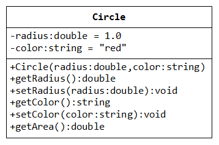Instead of putting all the codes in a single file. We shall "separate the interface and implementation" by placing the codes in 3 files.
Circle.h: defines the public interface of theCircleclass.Circle.cpp: provides the implementation of theCircleclass.TestCircle.cpp: A test driver program for theCircleclass.
Circle.h - Header
1 2 3 4 5 6 7 8 9 10 11 12 13 14 15 16 17 18 19 20 21 22 23 24 25 |
/* The Circle class Header (Circle.h) */ #include <string> // using string using namespace std; // Circle class declaration class Circle { private: // Accessible by members of this class only // private data members (variables) double radius; string color; public: // Accessible by ALL // Declare prototype of member functions // Constructor with default values Circle(double radius = 1.0, string color = "red"); // Public getters & setters for private data members double getRadius() const; void setRadius(double radius); string getColor() const; void setColor(string color); // Public member Function double getArea() const; }; |
Program Notes:
- The header file contains declaration statements, that tell the compiler about the names and types, and function prototypes without the implementation details.
- C++98/03 does NOT allow you to assign an initial value to a data member (except
conststaticmembers). Date members are to be initialized via the constructor. For example,double radius = 1.0; // error: ISO C++ forbids in-class initialization of non-const static member 'radius'
C++11 allows in-class initialization of data members. - You can provide default value to function's arguments in the header. For example,
Circle(double radius = 1.0, string color = "red");
- Header contains function prototype, the parameter names are ignored by the compiler, but good to serve as documentation. For example, you can leave out the parameter names in the prototype as follows:
Circle(double = 1.0, string = "red"); // without identifiers // Identifiers not needed in prototype but good to serve as documentation
Header files shall contains constants, function prototypes, class/struct declarations.
Circle.cpp - Implementation
1 2 3 4 5 6 7 8 9 10 11 12 13 14 15 16 17 18 19 20 21 22 23 24 25 26 27 28 29 30 31 32 33 34 35 |
/* The Circle class Implementation (Circle.cpp) */ #include "Circle.h" // user-defined header in the same directory // Constructor // default values shall only be specified in the declaration, // cannot be repeated in definition Circle::Circle(double r, string c) { radius = r; color = c; } // Public getter for private data member radius double Circle::getRadius() const { return radius; } // Public setter for private data member radius void Circle::setRadius(double r) { radius = r; } // Public getter for private data member color string Circle::getColor() const { return color; } // Public setter for private data member color void Circle::setColor(string c) { color = c; } // A public member function double Circle::getArea() const { return radius*radius*3.14159265; } |
Program Notes:
- The implementation file provides the definition of the functions, which are omitted from the declaration in the header file.
- #include "Circle.h"
The compiler searches the headers in double quotes (such as"Circle.h") in the current directory first, then the system's include directories. For header in angle bracket (such as<iostream>), the compiler does NOT searches the current directory, but only the system's include directories. Hence, use double quotes for user-defined headers. - Circle::Circle(double r, string c) {
You need to include theclassName::(called class scope resolution operator) in front of all the members names, so as to inform the compiler this member belong to a particular class.
(Class Scope: Names defined inside a class have so-called class scope. They are visible within the class only. Hence, you can use the same name in two different classes. To use these names outside the class, the class scope resolution operatorclassName::is needed.) - You CANNOT place the default arguments in the implementation (they shall be placed in the header). For example,
Circle::Circle(double r = 1.0, string c = "red") { // error!
Compiling the Circle Class
You can compile the Circle.cpp to an object file called Circle.o, via option -c (compile-only) in GNU GCC:
> g++ -c Circle.cpp
// option –c for compile-only, output is Circle.o
To use the Circle class, the user needs Circle.h and Circle.o. He does not need Circle.cpp. In other words, you do not need to give away your source codes, but merely the public declarations and the object codes.
TestCircle.cpp - Test Driver
Let's write a test program to use the Circle class created.
1 2 3 4 5 6 7 8 9 10 11 12 13 14 15 16 17 18 19 20 21 22 |
/* A test driver for the Circle class (TestCircle.cpp) */ #include <iostream> #include "Circle.h" // using Circle class using namespace std; int main() { // Construct an instance of Circle c1 Circle c1(1.2, "red"); cout << "Radius=" << c1.getRadius() << " Area=" << c1.getArea() << " Color=" << c1.getColor() << endl; c1.setRadius(2.1); // Change radius and color of c1 c1.setColor("blue"); cout << "Radius=" << c1.getRadius() << " Area=" << c1.getArea() << " Color=" << c1.getColor() << endl; // Construct another instance using the default constructor Circle c2; cout << "Radius=" << c2.getRadius() << " Area=" << c2.getArea() << " Color=" << c2.getColor() << endl; return 0; } |
Compiling the Test Program
To compile TestCircle.cpp with the object code Circle.o (and Circle.h):
> g++ -o TestCircle.exe TestCircle.cpp Circle.o
// option -o specifies the output filename
You can also compile TestCircle.cpp with the source code Circle.cpp (and Circle.h)
> g++ -o TestCircle.exe TestCircle.cpp Circle.cpp
Example: The Time Class
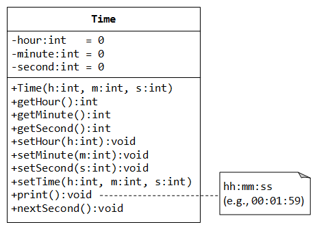Let's write a class called Time, which models a specific instance of time with hour, minute and second values, as shown in the class diagram.
The class Time contains the following members:
- Three
privatedata members:hour(0-23),minute(0-59) andsecond(0-59), with default values of 0. - A
publicconstructorTime(), which initializes the data membershour,minuteandsecondwith the values provided by the caller. publicgetters and setters for private data members:getHour(),getMinute(),getSecond(),setHour(),setMinute(), andsetSecond().- A
publicmember functionsetTime()to set the values ofhour,minuteandsecondgiven by the caller. - A
publicmember functionprint()to print thisTimeinstance in the format "hh:mm:ss", zero-filled, e.g.,01:30:04. - A
publicmember functionnextSecond(), which increase this instance by one second.nextSecond()of23:59:59shall be00:00:00.
Let's write the code for the Time class, with the header and implementation separated in two files: Time.h and Time.cpp.
Header - Time.h
1 2 3 4 5 6 7 8 9 10 11 12 13 14 15 16 17 18 19 20 21 22 23 24 25 26 |
/* Header for the Time class (Time.h) */ #ifndef TIME_H // Include this "block" only if TIME_H is NOT defined #define TIME_H // Upon the first inclusion, define TIME_H so that // this header will not get included more than once class Time { private: // private section // private data members int hour; // 0 - 23 int minute; // 0 - 59 int second; // 0 - 59 public: // public section // public member function prototypes Time(int h = 0, int m = 0, int s = 0); // Constructor with default values int getHour() const; // public getter for private data member hour void setHour(int h); // public setter for private data member hour int getMinute() const; // public getter for private data member minute void setMinute(int m); // public setter for private data member minute int getSecond() const; // public getter for private data member second void setSecond(int s); // public setter for private data member second void setTime(int h, int m, int s); // set hour, minute and second void print() const; // Print a description of this instance in "hh:mm:ss" void nextSecond(); // Increase this instance by one second }; // need to terminate the class declaration with a semicolon #endif // end of "#ifndef" block |
Dissecting Time.h
#ifndef TIME_H
#define TIME_H
......
#endif
To prevent an header file from included more than once into a source file (which could result in compilation error if an entity is declared twice, e.g., int i), we wrap the header codes within a pair of preprocessor directives #ifndef (if not define) and #endif. The codes within the if-block will only be included if the identifier TIME_H has not been defined. This is true for the first inclusion, which also defines the identifier TIME_H (the first directive in body of the if-block). No subsequent inclusion is possible, since TIME_H has been defined during the first inclusion. By convention, use the identifier XXX_H (or XXX_H_INCLUDED) for header Xxx.h.
class Time {
private:
......
public:
......
};
The header Time.h contains the class declaration for the class Time. It is divided into two sections: private and public. The private members (data or functions) are accessible by members of this class only, while public members are visible by all (such as the main() function which is outside the class). The class declaration must be terminated by a semicolon.
private:
int hour;
int minute;
int second;
public:
......
We declare 3 private data members called hour, minute and second. In C++98/C++03, you are NOT allow to initialize a data member in the class declaration (except const static int data members). For example, setting hour = 0 causes a compilation error. Instead, the data members are to be initialized in the constructor (to be shown later). The newer C++11 allows initialization of data members.
Only member function prototypes are listed in the class declaration. A function prototype consists of the return-type, function name and parameter types.
Time(int h = 0, int m = 0, int s = 0);
declares the so-called constructor. A constructor is a special function that has the same name as the class. A constructor has no return type, or implicitly return void. No return statement is allowed inside the constructor's body. A constructor can only be used during the instance declaration to initialize the data members of the instance. It cannot be invoked thereafter.
In the function prototypes of the header, we can set the default values of the function's parameters for any function member using "= default-value".
In this case, this constructor can be invoked with 0 to 3 arguments, the omitted trailing arguments will be set to their default values, e.g.,
Time t1(1, 2, 3); // no default used Time t2(1, 2); // s = 0 (default) Time t3(1); // m = 0, s = 0 (defaults) Time t4; // h = 0, m = 0, s = 0 (all defaults) - no empty parentheses ()
The identifiers h, m and s are not needed in the function prototype - you only need to specify the parameters' types. But they serve as proper documentation, and are strongly recommended.
int getHour() const;
void setHour(int h);
int getHour() const;
void setHour(int h);
int getHour() const;
void setHour(int h);
declare the so-called getter and setter for the private data member hour, minute and second. Since the data members are private and are not accessible outside the class, public getters and setters are often provided to read and modify the private data members. By convention, a getter receives nothing (void) from the caller and returns a value of the type of the data member; a setter receives a value of the type of the data member and returns void. Setters may validate the input before setting the value of the data member.
We declare the getter function constant, by placing the keyword const after the function parameter list. A const member function cannot modify any data member of this object. Getter does not need to modify any data member.
void setTime(int h, int m, int s);
declares a public member function to set the hour, minute and second of this instance in one call.
void print() const;
declares a public member function to print this instance in the format HH:MM:SS, zero-filled, e.g., 01:56:09. The function print() returns void.
void nextSecond();
declares a public member function to increase this instance by one second. For example, 23:59:59 becomes 00:00:00. The function nextSecond() returns void.
Implementation - Time.cpp
1 2 3 4 5 6 7 8 9 10 11 12 13 14 15 16 17 18 19 20 21 22 23 24 25 26 27 28 29 30 31 32 33 34 35 36 37 38 39 40 41 42 43 44 45 46 47 48 49 50 51 52 53 54 55 56 57 58 59 60 61 62 63 64 65 66 67 68 69 70 71 72 73 |
/* Implementation for the Time Class (Time.cpp) */ #include <iostream> #include <iomanip> #include "Time.h" // include header of Time class using namespace std; // Constructor with default values. No input validation Time::Time(int h, int m, int s) { hour = h; minute = m; second = s; } // public getter for private data member hour int Time::getHour() const { return hour; } // public setter for private data member hour. No input validation void Time::setHour(int h) { hour = h; } // public getter for private data member minute int Time::getMinute() const { return minute; } // public setter for private data member minute. No input validation void Time::setMinute(int m) { minute = m; } // public getter for private data member second int Time::getSecond() const { return second; } // public setter for private data member second. No input validation void Time::setSecond(int s) { second = s; } // Set hour, minute and second. No input validation void Time::setTime(int h, int m, int s) { hour = h; minute = m; second = s; } // Print this Time instance in the format of "hh:mm:ss", zero filled void Time::print() const { cout << setfill('0'); // zero-filled, need <iomanip>, sticky cout << setw(2) << hour // set width to 2 spaces, need <iomanip>, non-sticky << ":" << setw(2) << minute << ":" << setw(2) << second << endl; } // Increase this instance by one second void Time::nextSecond() { ++second; if (second >= 60) { second = 0; ++minute; } if (minute >= 60) { minute = 0; ++hour; } if (hour >= 24) { hour = 0; } } |
Dissecting Time.cpp
The implementation file Time.cpp contains member's definitions (whereas the header file contains the declarations), in particular, member functions.
All member's identifiers in the implementation are preceded by the classname and the scope resolution operator (::), e.g., Time::Time and Time::getHour, so that the compiler can tell that these identifiers belong to a particular class, in this case, Time.
Time::Time(int h, int m, int s) {
hour = h;
minute = m;
second = s;
}
In the constructor, we initialize the private data members hour, minute and second based on the inputs provided by the caller. C++ does NOT initialize fundamental-type (e.g., int, double) data members. It also does NOT issue an error message if you use an data member before it is initialized. Hence, It is strongly recommended to initialize all the data members in the constructor, so that the constructed instance is complete, instead of relying on the user to set the values of the data members after construction.
The default values of the parameters are specified in the class declaration (in the header), NOT in the function definition. Placing a default value in function definition (e.g., h = 0) causes a compilation error.
Take note that we have not included input validation (e.g., hour shall be between 0 and 23) in the constructor (and setters). We shall do that in the later example.
int Time::getHour() const {
return hour;
}
the public getter for private data member hour simply returns the value of the data member hour.
void Time::setHour(int h) {
hour = h;
}
the public setter for private data member hour sets the data member hour to the given value h. Again, there is no input validation for h (shall be between 0 to 23).
The rest of the function definitions are self-explanatory.
"this" Pointer
Instead of naming the function parameters h, m and s, we would like to name the parameters hour, minute and second, which are semantically more meaningful. However, these names crashes with the names of private data members. C++ provides a keyword this (which is a pointer to this instance - to be discussed later) to differentiate between the data members and function parameters. this->hour, this->minute and this->second refer to the data members; while hour, minute, and second refer to the function parameters. We can rewrite the constructor and setter as follows:
Time::Time(int hour, int minute, int second) { // Constructor
this->hour = hour;
this->minute = minute;
this->second = second;
}
Time::setHour(int hour) { // Setter for hour
this->hour = hour;
}
Time::getHour() const { // Getter for hour
return this->hour; // this-> is the default, and hence optional
}
Member Initializer List
C++ provide an alternative syntax to initialize data members in the constructor called member initializer list. For example,
Time::Time(int h, int m, int s) : hour(h), minute(m), second(s) { // The body runs after the member initializer list // empty in this case }
The member initializer list is placed after the function parameter list, separated by a colon, in the form of dataMemberName(parameters). For fundamental-type data members (e.g., int, double), hour(h) is the same as hour = h. For object data members (to be discussed later), the copy constructor will be invoked. The function body will be executed after the member initializer list, which is empty in this case.
The data members in the initializer list are initialized in the order of their declarations in the class declaration, not the order in the initializer list.
Test Driver - TestTime.cpp
1 2 3 4 5 6 7 8 9 10 11 12 13 14 15 16 17 18 19 20 21 22 23 24 25 26 27 28 29 30 31 32 33 34 35 36 37 38 |
/* Test Driver for the Time class (TestTime.cpp) */ #include <iostream> #include "Time.h" // include header of Time class using namespace std; int main() { Time t1(23, 59, 59); // Test constructor // Test all public member functions t1.print(); // 23:59:59 t1.setHour(12); t1.setMinute(30); t1.setSecond(15); t1.print(); // 12:30:15 cout << "Hour is " << t1.getHour() << endl; cout << "Minute is " << t1.getMinute() << endl; cout << "Second is " << t1.getSecond() << endl; Time t2; // Test constructor with default values for hour, minute and second t2.print(); // 00:00:00 t2.setTime(1, 2, 3); t2.print(); // 01:02:03 Time t3(12); // Use default values for minute and second t3.print(); // 12:00:00 // Test nextSecond() Time t4(23, 59, 58); t4.print(); t4.nextSecond(); t4.print(); t4.nextSecond(); t4.print(); // No input validation Time t5(25, 61, 99); // values out of range t5.print(); // 25:61:99 } |
Dissecting TestTime.cpp
The test driver tests the constructor (with and without the default values) and all the public member functions. Clearly, no input validation is carried out, as reflected in instance t5.
Exercise
Add member functions previousSecond(), nextMinute(), previousMinute(), nextHour(), previousHour() to the Time class.
Compiling the Program
You can compile all the source file together to get the executable file as follows:
// Using GCC on Windows // Compile all source files, -o specifies the output > g++ -o TestTime.exe Time.cpp TestTime.cpp // Execute the program > TestTime
Alternatively, you can compile Time.cpp into an object file Time.o, and then the test driver with the object file. In this way, you only distribute the object file and header file, not the source file.
// Compile Time.cpp into object file Time.o, with -c option > g++ -c Time.cpp // Compile test driver with object file > g++ -o TestTime.exe TestTime.cpp Time.o // Execute the test driver > TestTime
Example: The Point Class
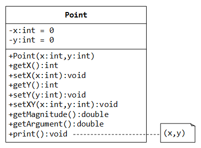The Point class, as shown in the class diagram, models 2D points with x and y co-ordinates.
In the class diagram, "-" denotes private member; "+" denotes public member. "= xxx" specifies the default value of a data member.
The Point class contains the followings:
- Private data members
xandy(of typeint), with default values of 0. - A constructor, getters and setters for private data member
xandy. - A function setXY() to set both
xandycoordinates of aPoint. - A function
getMagnitude()which returns√(x2+y2). You can use the built-insqrt()function in<cmath>to compute the square root. - A function
getArgument()which returnstan-1(y/x). You can use the built-inatan2(y, x)function in<cmath>to compute the gradient in radians. - A function
print()which prints "(x,y)" of this instance.
Point.h - Header
1 2 3 4 5 6 7 8 9 10 11 12 13 14 15 16 17 18 19 20 21 22 23 24 25 |
/* The Point class Header (Point.h) */ #ifndef POINT_H #define POINT_H // Point class declaration class Point { private: // private data members (variables) int x; int y; public: // Declare member function prototypes Point(int x = 0, int y = 0); // Constructor with default values int getX() const; void setX(int x); int getY() const; void setY(int y); void setXY(int x, int y); double getMagnitude() const; double getArgument() const; void print() const; }; #endif |
Point.cpp - Implementation
1 2 3 4 5 6 7 8 9 10 11 12 13 14 15 16 17 18 19 20 21 22 23 24 25 26 27 28 29 30 31 32 33 34 35 36 37 38 39 40 41 42 43 44 45 46 47 48 49 |
/* The Point class Implementation (Point.cpp) */ #include "Point.h" // user-defined header in the same directory #include <iostream> #include <cmath> using namespace std; // Constructor (default values can only be specified in the declaration) Point::Point(int x, int y) : x(x), y(y) { } // Use member initializer list // Public getter for private data member x int Point::getX() const { return x; } // Public setter for private data member x void Point::setX(int x) { this->x = x; } // Public getter for private data member y int Point::getY() const { return y; } // Public setter for private data member y void Point::setY(int y) { this->y = y; } // Public member function to set both x and y void Point::setXY(int x, int y) { this->x = x; this->y = y; } // Public member function to return the magitude double Point::getMagnitude() const { return sqrt(x*x + y*y); // sqrt in <cmath> } // Public member function to return the argument double Point::getArgument() const { return atan2(y, x); // atan2 in <cmath> } // Public member function to print description about this point void Point::print() const { cout << "(" << x << "," << y << ")" << endl; } |
TestPoint.cpp - Test Driver
1 2 3 4 5 6 7 8 9 10 11 12 13 14 15 16 17 18 19 20 21 22 23 24 25 |
/* A test driver for the Point class (TestPoint.cpp) */ #include <iostream> #include <iomanip> #include "Point.h" // using Point class using namespace std; int main() { // Construct an instance of Point p1 Point p1(3, 4); p1.print(); cout << "x = " << p1.getX() << endl; cout << "y = " << p1.getY() << endl; cout << fixed << setprecision(2); cout << "mag = " << p1.getMagnitude() << endl; cout << "arg = " << p1.getArgument() << endl; p1.setX(6); p1.setY(8); p1.print(); p1.setXY(1, 2); p1.print(); // Construct an instance of Point using default constructor Point p2; p2.print(); } |
Example: The Account Class
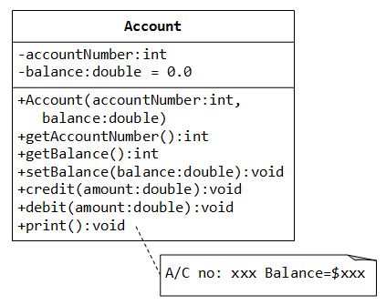A class called Account, which models a bank account, is designed as shown in the class diagram. It contains:
- Two private data members:
accountNumber(int) andbalance(double), which maintains the current account balance. - Public functions
credit()anddebit(), which adds or subtracts the given amount from the balance, respectively. Thedebit()function shall print "amount withdrawn exceeds the current balance!" ifamountis more thanbalance. - A public function
print(), which shall print "A/C no: xxx Balance=xxx" (e.g., A/C no: 991234 Balance=$88.88), withbalancerounded to two decimal places.
Header file - Account.h
1 2 3 4 5 6 7 8 9 10 11 12 13 14 15 16 17 18 19 20 |
/* Header for Account class (Account.h) */
#ifndef ACCOUNT_H
#define ACCOUNT_H
class Account {
private:
int accountNumber;
double balance;
public:
Account(int accountNumber, double balance = 0.0);
int getAccountNumber() const;
double getBalance() const;
void setBalance(double balance);
void credit(double amount);
void debit(double amount);
void print() const;
};
#endif
|
Implementation file - Account.cpp
1 2 3 4 5 6 7 8 9 10 11 12 13 14 15 16 17 18 19 20 21 22 23 24 25 26 27 28 29 30 31 32 33 34 35 36 37 38 39 40 41 42 43 |
/* Implementation for the Account class (Account.cpp) */ #include <iostream> #include <iomanip> #include "Account.h" using namespace std; // Constructor Account::Account(int no, double b) : accountNumber(no), balance(b) { } // Public getter for private data member accountNumber int Account::getAccountNumber() const { return accountNumber; } // Public getter for private data member balance double Account::getBalance() const { return balance; } // Public setter for private data member balance void Account::setBalance(double b) { balance = b; } // Adds the given amount to the balance void Account::credit(double amount) { balance += amount; } // Subtract the given amount from the balance void Account::debit(double amount) { if (amount <= balance) { balance -= amount; } else { cout << "Amount withdrawn exceeds the current balance!" << endl; } } // Print description for this Account instance void Account::print() const { cout << fixed << setprecision(2); cout << "A/C no: " << accountNumber << " Balance=$" << balance << endl; } |
Test Driver - TestAccount.cpp
1 2 3 4 5 6 7 8 9 10 11 12 13 14 15 16 17 18 19 20 21 |
/* Test Driver for Account class (TestAccount.cpp) */ #include <iostream> #include "Account.h" using namespace std; int main() { Account a1(8111, 99.99); a1.print(); // A/C no: 8111 Balance=$99.99 a1.credit(20); a1.debit(10); a1.print(); // A/C no: 8111 Balance=$109.99 Account a2(8222); // default balance a2.print(); // A/C no: 8222 Balance=$0.00 a2.setBalance(100); a2.credit(20); a2.debit(200); // Amount withdrawn exceeds the current balance! a2.print(); // A/C no: 8222 Balance=$120.00 return 0; } |
Example: The Ball class
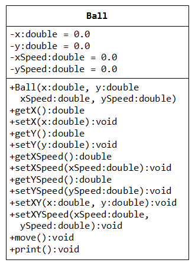A Ball class models a moving ball, designed as shown in the class diagram, contains the following members:
- Four
privatedata membersx,y,xSpeedandySpeedto maintain the position and speed of the ball. - A constructor, and public getters and setters for the private data members.
- A function
setXY(), which sets the position of the ball andsetXYSpeed()to set the speed of the ball. - A function
move(), which increasesxandybyxSpeedandySpeed, respectively. - A function
print(), which prints "Ball @ (x,y) with speed (xSpeed,ySpeed)", to 2 decimal places.
Header File - Ball.h
1 2 3 4 5 6 7 8 9 10 11 12 13 14 15 16 17 18 19 20 21 22 23 24 25 26 27 |
/* Header for the Ball class (Ball.h) */ #ifndef BALL_H #define BALL_H class Ball { private: double x, y; // Position of the ball double xSpeed, ySpeed; // Speed of the ball public: Ball(double x = 0.0, double y = 0.0, // Constructor with default values double xSpeed = 0.0, double ySpeed = 0.0); double getX() const; void setX(double x); double getY() const; void setY(double y); double getXSpeed() const; void setXSpeed(double xSpeed); double getYSpeed() const; void setYSpeed(double ySpeed); void setXY(double x, double y); void setXYSpeed(double xSpeed, double ySpeed); void move(); void print() const; }; #endif |
Implementation File - Ball.cpp
1 2 3 4 5 6 7 8 9 10 11 12 13 14 15 16 17 18 19 20 21 22 23 24 25 26 27 28 29 30 31 32 33 34 35 36 37 38 39 40 41 42 43 44 45 46 47 48 49 50 51 52 53 54 55 56 57 58 59 60 |
/* Implementation for the Ball Class (Ball.cpp) */ #include <iostream> #include <iomanip> #include "Ball.h" // include header of Ball class using namespace std; // Constructor with default values. No input validation Ball::Ball(double x, double y, double xSpeed, double ySpeed) : x(x), y(y), xSpeed(xSpeed), ySpeed(ySpeed) { } // use member initializer list // public getters/setters for private data members double Ball::getX() const { return x; } double Ball::getY() const { return y; } void Ball::setX(double x) { this->x = x; } void Ball::setY(double y) { this->y = y; } double Ball::getXSpeed() const { return xSpeed; } double Ball::getYSpeed() const { return ySpeed; } void Ball::setXSpeed(double xSpeed) { this->xSpeed = xSpeed; } void Ball::setYSpeed(double ySpeed) { this->ySpeed = ySpeed; } // Set position (x,y) void Ball::setXY(double x, double y) { this->x = x; this->y = y; } // Set speed (xSpeed,ySpeed) void Ball::setXYSpeed(double xSpeed, double ySpeed) { this->xSpeed = xSpeed; this->ySpeed = ySpeed; } // Move the ball by increases x and y by xSpeed and ySpeed void Ball::move() { x += xSpeed; // increment x by xSpeed y += ySpeed; // increment y by ySpeed } // Print a description about this Ball instance void Ball::print() const { cout << fixed << setprecision(2); cout << "Ball @ (" << x << ',' << y << ") with speed (" << xSpeed << ',' << ySpeed << ')' << endl; } |
Test Driver - TestBall.cpp
1 2 3 4 5 6 7 8 9 10 11 12 13 14 15 16 17 18 |
/* Test Driver for the Ball class (TestBall.cpp) */ #include <iostream> #include "Ball.h" // include header of Ball class using namespace std; int main() { Ball ball; ball.print(); // Ball @ (0.00,0.00) with speed (0.00,0.00) ball.setXY(1.1, 2.2); ball.setXYSpeed(3.3, 4.4); ball.print(); // Ball @ (1.10,2.20) with speed (3.30,4.40) ball.setX(5.5); ball.setY(6.6); cout << "x is " << ball.getX() << endl; // x is 5.50 cout << "y is " << ball.getY() << endl; // y is 6.60 ball.move(); ball.print(); // Ball @ (8.80,11.00) with speed (3.30,4.40) } |
Example: The Author and Book Classes (for a Bookstore)
Let's start with the Author class
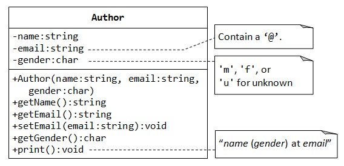Let's begin with a class called Author, designed as shown in the class diagram. It contains:
- Three
privatedata members:name(string),email(string), andgender(charof'm','f'or'u'for unknown). - A constructor to initialize the
name,emailandgenderwith the given values. There are no default values for data members. - Getters for
name,emailandgender, and setter foremail. There is no setter fornameandgenderas we assume that these attributes cannot be changed. - A
print()member function that prints "name (gender) at email", e.g., "Peter Jones (m) at peter@somewhere.com".
Header File - Author.h
1 2 3 4 5 6 7 8 9 10 11 12 13 14 15 16 17 18 19 20 21 22 23 |
/* Header for the Author class (Author.h) */ #ifndef AUTHOR_H #define AUTHOR_H #include <string> using namespace std; class Author { private: string name; string email; char gender; // 'm', 'f', or 'u' for unknown public: Author(string name, string email, char gender); string getName() const; string getEmail() const; void setEmail(string email); char getGender() const; void print() const; }; #endif |
Implementation File - Author.cpp
1 2 3 4 5 6 7 8 9 10 11 12 13 14 15 16 17 18 19 20 21 22 23 24 25 26 27 28 29 30 31 32 33 34 35 36 37 38 39 40 41 42 43 44 45 |
/* Implementation for the Author class (Author.cpp) */ #include <iostream> #include "Author.h" using namespace std; // Constructor, with input validation Author::Author(string name, string email, char gender) { this->name = name; setEmail(email); // Call setter to check for valid email if (gender == 'm' || gender == 'f') { this->gender = gender; } else { cout << "Invalid gender! Set to 'u' (unknown)." << endl; this->gender = 'u'; } } string Author::getName() const { return name; } string Author::getEmail() const { return email; } void Author::setEmail(string email) { // Check for valid email. Assume that a valid email contains // a '@' that is not the first nor last character. size_t atIndex = email.find('@'); if (atIndex != string::npos && atIndex != 0 && atIndex != email.length()-1) { this->email = email; } else { cout << "Invalid email! Set to empty string." << endl; this->email = ""; } } char Author::getGender() const { return gender; } // print in the format "name (gender) at email" void Author::print() const { cout << name << " (" << gender << ") at " << email << endl; } |
Dissecting the Author.cpp
Author::Author(string name, string email, char gender) {
this->name = name;
setEmail(email);
In this example, we use identifier name in the function's parameter, which crashes with the data member's identifier name. To differentiate between the two identifiers, we use the keyword this, which is a pointer to this instance. this->name refers to the data member; while name refers to the function's parameter.
No input validation is done on the parameter name. On the other hand, for email, we invoke setter setEmail() which performs input validation.
if (gender == 'm' || gender == 'f') {
this->gender = gender;
} else {
cout << "Invalid gender! Set to 'u' (unknown)." << endl;
this->gender = 'u';
}
}
We validate the input for gender ('m', 'f', or 'u' for unknown). We assign 'u' for any other inputs.
void Author::setEmail(string email) {
size_t found = email.find('@');
if (found != string::npos && found != 0 && found != email.length()-1) {
this->email = email;
} else {
cout << "Invalid email! Set to empty string." << endl;
this->email = "";
}
}
To validate email, we assume that there is an '@' which is not the first or last character (there are other stricter email validation criteria). We use the string class function find() to find the position of the character '@', which returns a value of type size_t (typically same as unsigned int). The function find() returns a special constant string::npos (which is typically set to -1) to indicate "not found"; 0 for the first character and length()-1 for the last character (where string's function length() returns the length of the string).
TestAuthor.cpp
1 2 3 4 5 6 7 8 9 10 11 12 13 14 15 16 17 18 19 20 |
/* Test Driver for the Author class (TestAuthor.cpp) */ #include "Author.h" int main() { // Declare and construct an instance of Author Author peter("Peter Jones", "peter@somewhere.com", 'm'); peter.print(); // Peter Jones (m) at peter@somewhere.com peter.setEmail("peter@xyz.com"); peter.print(); // Peter Jones (m) at peter@xyz.com Author paul("Paul Jones", "@somewhere.com", 'n'); // Invalid email! Set to empty string. // Invalid gender! Set to 'u' (unknown). paul.setEmail("paul@"); // Invalid email! Set to empty string. paul.print(); // Paul Jones (u) at } |
A Book is written by an Author - Using an "Object" Data Member
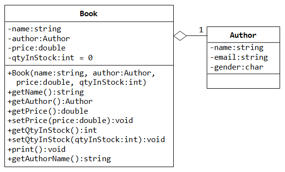Let's design a Book class. Assume that a book is written by one and only one author. The Book class (as shown in the class diagram) contains the following members:
- Four
privatedata members:name(string),author(an instance of the classAuthorthat we have created earlier),price(double), andqtyInStock(int, with default value of 0). Thepriceshall be positive and theqtyInStockshall be zero or positive.
Take note that data memberauthoris an instance (object) of the classAuthor, instead of a fundamental types (such asint,double). In fact,nameis an object of the classstringtoo. - The
publicgetters and setters for theprivatedata members. Take note thatgetAuthor()returns an object (an instance of classAuthor). - A
publicmember functionprint(), which prints "'book-name' by author-name (gender) @ email". - A
publicmember functiongetAuthorName(), which returns thenameof the author of thisBookinstance.
The hallow diamond shape in the class diagram denotes aggregation (or has-a) association relationship. That is, a Book instance has one (and only one) Author instance as its component.
Header File - Book.h
1 2 3 4 5 6 7 8 9 10 11 12 13 14 15 16 17 18 19 20 21 22 23 24 25 26 27 28 29 |
/* Header for the class Book (Book.h) */ #ifndef BOOK_H #define BOOK_H #include <string> #include "Author.h" // Use the Author class using namespace std; class Book { private: string name; Author author; // data member author is an instance of class Author double price; int qtyInStock; public: Book(string name, Author author, double price, int qtyInStock = 0); // To recieve an instance of class Author as argument string getName() const; Author getAuthor() const; // Returns an instance of the class Author double getPrice() const; void setPrice(double price); int getQtyInStock() const; void setQtyInStock(int qtyInStock); void print() const; string getAuthorName() const; }; #endif |
#include "Author.h"
We need to include the "Author.h" header, as we use the Author class in this class Book.
private:
Author author;
We declare a private data member author as an instance of class Author, defined earlier.
Implementation File - Book.cpp
1 2 3 4 5 6 7 8 9 10 11 12 13 14 15 16 17 18 19 20 21 22 23 24 25 26 27 28 29 30 31 32 33 34 35 36 37 38 39 40 41 42 43 44 45 46 47 48 49 50 51 52 53 54 55 56 57 58 59 60 |
/* Implementation for the class Book (Book.cpp) */ #include <iostream> #include "Book.h" using namespace std; // Constructor, with member initializer list to initialize the // component Author instance Book::Book(string name, Author author, double price, int qtyInStock) : name(name), author(author) { // Must use member initializer list to construct object // Call setters to validate price and qtyInStock setPrice(price); setQtyInStock(qtyInStock); } string Book::getName() const { return name; } Author Book::getAuthor() const { return author; } double Book::getPrice() const { return price; } // Validate price, which shall be positive void Book::setPrice(double price) { if (price > 0) { this->price = price; } else { cout << "price should be positive! Set to 0" << endl; this->price = 0; } } int Book::getQtyInStock() const { return qtyInStock; } // Validate qtyInStock, which cannot be negative void Book::setQtyInStock(int qtyInStock) { if (qtyInStock >= 0) { this->qtyInStock = qtyInStock; } else { cout << "qtyInStock cannot be negative! Set to 0" << endl; this->qtyInStock = 0; } } // print in the format ""Book-name" by author-name (gender) at email" void Book::print() const { cout << "'" << name << "' by "; author.print(); } // Return the author' name for this Book string Book::getAuthorName() const { return author.getName(); // invoke the getName() on instance author } |
Book::Book(string name, Author author, double price, int qtyInStock)
: name(name), author(author) {
setPrice(price);
setQtyInStock(qtyInStock);
}
In the constructor, the caller is supposed to create an instance of Author, and pass the instance into the constructor. We use member initializer list to initialize data members name and author. We call setters in the body, which perform input validation to set the price and qtyInStock. The body is run after the member initializer list. The author(author) invokes the default copy constructor of the Author class, which performs memberwise copy for all the data members. Object data member shall be constructed via the member initializer list, not in the body. Otherwise, the default constructor will be invoked to construct the object.
void Book::setPrice(double price) {
if (price > 0) {
this->price = price;
} else {
cout << "price should be positive! Set to 0" << endl;
this->price = 0;
}
}
The setter for price validates the given input.
string Book::getAuthorName() const {
return author.getName();
}
Invoke the getName() of the data member author, which returns the author's name of this Book instance.
TestBook.cpp
1 2 3 4 5 6 7 8 9 10 11 12 13 14 15 16 17 18 19 20 21 22 23 24 25 26 |
/* Test Driver for the Book class (TestBook.cpp) */ #include <iostream> #include "Book.h" using namespace std; int main() { // Declare and construct an instance of Author Author peter("Peter Jones", "peter@somewhere.com", 'm'); peter.print(); // Peter Jones (m) at peter@somewhere.com // Declare and construct an instance of Book Book cppDummy("C++ for Dummies", peter, 19.99); cppDummy.setQtyInStock(88); cppDummy.print(); // 'C++ for Dummies' by Peter Jones (m) at peter@somewhere.com cout << cppDummy.getQtyInStock() << endl; // 88 cout << cppDummy.getPrice() << endl; // 19.99 cout << cppDummy.getAuthor().getName() << endl; // "Peter Jones" cout << cppDummy.getAuthor().getEmail() << endl; // "peter@somewhere.com" cout << cppDummy.getAuthorName() << endl; // "Peter Jones" Book moreCpp("More C++ for Dummies", peter, -19.99); // price should be positive! Set to 0 cout << moreCpp.getPrice() << endl; // 0 } |
The Default Copy Constructor
The initializer author(author) in the constructor invokes the so-called copy constructor. A copy constructor creates a new instance by copying the given instance of the same class. If you do not provide a copy constructor in your class, C++ provides a default copy constructor, which construct a new object via memberwise copy. For example, for Author class, the default copy constructor provided by the compiler is as follows:
// Default copy constructor of Author class provided by C++ Author::Author(const Author& other) : name(other.name), email(other.email), gender(other.gender) { } // memberwise copy
Pass-by-Reference for Objects Function Parameters Author and string
By default, objects are pass-by-value into functions. That is, a clone copy is created and pass into the function, instead of the original copy. Pass-by-value for huge objects depicts performance due to the overhead of creating a clone copy.
Instead, we could pass an object into function by reference, via the reference (&) declaration in the parameter list. If we do not intend to modify the object inside the function (with side effect to the original copy), we set it as const.
In the Book class, data members of string and Author are objects. Author class was defined earlier; string is a class provided in C++ header <string>, belonging to the namespace std. Instead of including "using namespace std;" in the header (which is a poor practice as this statement will be included in all the files using this header), we shall use the scope resolution operator and refer to it as std::string.
Let's modify our Book class to illustrate pass-by-reference (for performance).
Author.h
1 2 3 4 5 6 7 8 9 10 11 12 13 14 15 16 17 18 19 20 21 22 23 |
/* Header for Author class (Author.h) */ #ifndef AUTHOR_H #define AUTHOR_H #include <string> class Author { private: std::string name; std::string email; char gender; // 'm', 'f', or 'u' for unknown public: Author(const std::string & name, const std::string & email, char gender); // & specifies pass by reference, const for non-mutable std::string getName() const; std::string getEmail() const; void setEmail(const std::string & email); char getGender() const; void print() const; }; #endif |
Program Notes:
- In C++,
stringis a class in the standard library (in header <string>, belonging to namespacestd), just likePoint,Circleclasses that we have defined. - Instead of including "
using namespace std;", which is a poor practice as this statement will be included in all the files using this header, we use the fully-qualified namestd::string. - Instead of passing
stringobjects by value into function, which affects performance as a clone copy needs to be made. We pass thestringobjects by reference (indicated by&). - However, in pass-by-reference, changes inside the function will affect the caller's copy outside the function.
- If we do not intend to change the object inside the function, we could use keyword
constto indicate immutability. If the object is inadvertently changed inside the function, compiler would issue an error.
Author.cpp
1 2 3 4 5 6 7 8 9 10 11 12 13 14 15 16 17 18 19 20 21 22 23 24 25 26 27 28 29 30 31 32 33 34 35 36 37 38 39 40 41 42 43 44 |
/* Implementation for the Author class (Author.cpp) */ #include <iostream> #include "Author.h" using namespace std; // Constructor, with input validation Author::Author(const string & name, const string & email, char gender) : name(name) { setEmail(email); // Call setter to check for valid email if (gender == 'm' || gender == 'f') { this->gender = gender; } else { cout << "Invalid gender! Set to 'u' (unknown)." << endl; this->gender = 'u'; } } string Author::getName() const { return name; } string Author::getEmail() const { return email; } void Author::setEmail(const string & email) { // Check for valid email. Assume that a valid email contains // a '@' that is not the first nor last character. size_t atIndex = email.find('@'); if (atIndex != string::npos && atIndex != 0 && atIndex != email.length()-1) { this->email = email; } else { cout << "Invalid email! Set to empty string." << endl; this->email = ""; } } char Author::getGender() const { return gender; } // print in the format "name (gender) at email" void Author::print() const { cout << name << " (" << gender << ") at " << email << endl; } |
Program Notes:
- Author::Author(const string & name, const string & email, char gender) { ...... }
In the constructor, thestringobjects are passed by reference. This improves the performance as it eliminates the need of creating a temporary (clone) object. The constructor then invokes the copy constructor of thestringclass to memberwise copy the arguments into its data membersnameandemail.
We make the parametersconstto prevent them from modifying inside the function (with side effect to the original copies).
Book.h
1 2 3 4 5 6 7 8 9 10 11 12 13 14 15 16 17 18 19 20 21 22 23 24 25 26 27 28 |
/* Header for the class Book (Book.h) */ #ifndef BOOK_H #define BOOK_H #include <string> #include "Author.h" // Use the Author class using namespace std; class Book { private: string name; Author author; double price; int qtyInStock; public: Book(const string & name, const Author & author, double price, int qtyInStock = 0); string getName() const; Author getAuthor() const; double getPrice() const; void setPrice(double price); int getQtyInStock() const; void setQtyInStock(int qtyInStock); void print() const; string getAuthorName() const; }; #endif |
Program Notes:
- Book(const string & name, const Author & author, double price, int qtyInStock = 0);
stringandAuthorobjectsare passed into the constructor via reference. This improves performance as it eliminates the creation of a temporary clone copy in pass-by-value. The parameters are markedconstas we do not intend to modify them inside the function (with side effect to the original copies). - Author getAuthor() const;
The getter returns a copy of the data memberauthor.
Book.cpp
1 2 3 4 5 6 7 8 9 10 11 12 13 14 15 16 17 18 19 20 21 22 23 24 25 26 27 28 29 30 31 32 33 34 35 36 37 38 39 40 41 42 43 44 45 46 47 48 49 50 51 52 53 54 55 56 57 58 59 60 |
/* Implementation for the class Book (Book.cpp) */ #include <iostream> #include "Book.h" using namespace std; // Constructor, with member initializer list to initialize the // component Author instance Book::Book(const string & name, const Author & author, double price, int qtyInStock) : name(name), author(author) { // Init object reference in member initializer list // Call setters to validate price and qtyInStock setPrice(price); setQtyInStock(qtyInStock); } string Book::getName() const { return name; } Author Book::getAuthor() { return author; } double Book::getPrice() const { return price; } // Validate price, which shall be positive void Book::setPrice(double price) { if (price > 0) { this->price = price; } else { cout << "price should be positive! Set to 0" << endl; this->price = 0; } } int Book::getQtyInStock() const { return qtyInStock; } // Validate qtyInStock, which cannot be negative void Book::setQtyInStock(int qtyInStock) { if (qtyInStock >= 0) { this->qtyInStock = qtyInStock; } else { cout << "qtyInStock cannnot be negative! Set to 0" << endl; this->qtyInStock = 0; } } // print in the format ""Book-name" by author-name (gender) at email" void Book::print() const { cout << "'" << name << "' by "; author.print(); } // Return the author' name for this Book string Book::getAuthorName() const { return author.getName(); // invoke the getName() on instance author } |
- Book::Book(const string & name, Author & author, double price, int qtyInStock)
: name(name), author(author) { ...... }
name(name)andauthor(author)invoke the default copy constructors to construct new instances ofstringandAuthorby memberwise copy the parameters. - Author Book::getAuthor() { return author; }
A copy of the data memberauthoris returned to the caller.
You should avoid returning a reference of a private data member to the caller (e.g.,Author & Book::getAuthro() { return author; }), as the caller can change the private data member via the reference, which breaks the concept of "information hiding and encapsulation".
Test Driver - TestBook.cpp
1 2 3 4 5 6 7 8 9 10 11 12 13 14 15 16 17 18 19 20 21 22 23 24 |
/* Test Driver for the Book class (TestBook.cpp) */ #include <iostream> #include "Book.h" using namespace std; int main() { // Declare and construct an instance of Author Author peter("Peter Jones", "peter@somewhere.com", 'm'); peter.print(); // Peter Jones (m) at peter@somewhere.com // Declare and construct an instance of Book Book cppDummy("C++ for Dummies", peter, 19.99); cppDummy.print(); // 'C++ for Dummies' by Peter Jones (m) at peter@somewhere.com peter.setEmail("peter@xyz.com"); peter.print(); // Peter Jones (m) at peter@xyz.com cppDummy.print(); // 'C++ for Dummies' by Peter Jones (m) at peter@somewhere.com cppDummy.getAuthor().setEmail("peter@abc.com"); cppDummy.print(); // 'C++ for Dummies' by Peter Jones (m) at peter@somewhere.com } |
In the above test program, an instance of Author called peter is constructed (in Line 8). This instance is passed by reference into Book's constructor (Line 12) to create the Book's instance cppDummy.
Summary
All the codes in this version of example (using references) is exactly the same as the previous version (without using references), except that the object function parameters are marked with "const classname &" (e.g., const string &, const Author &). This eliminates the creation of temporary clone object as in the pass-by-value, which improves the performance. Take note that the constructor actually invokes the copy constructor to make a copy for its data member, instead of referencing the copy provided by the caller.